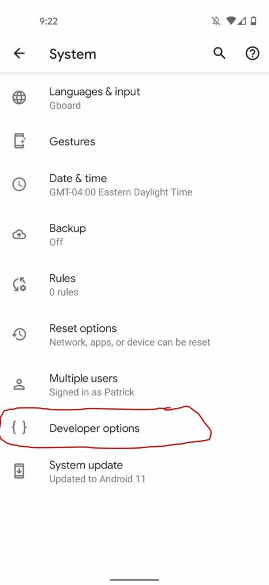
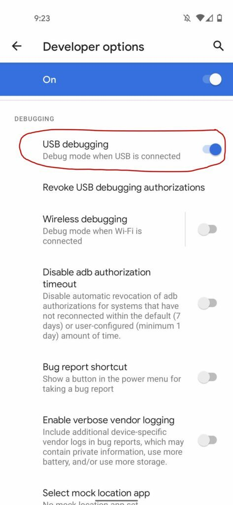
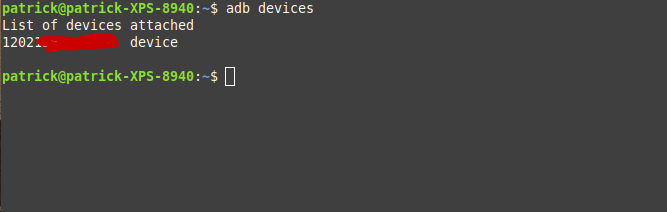
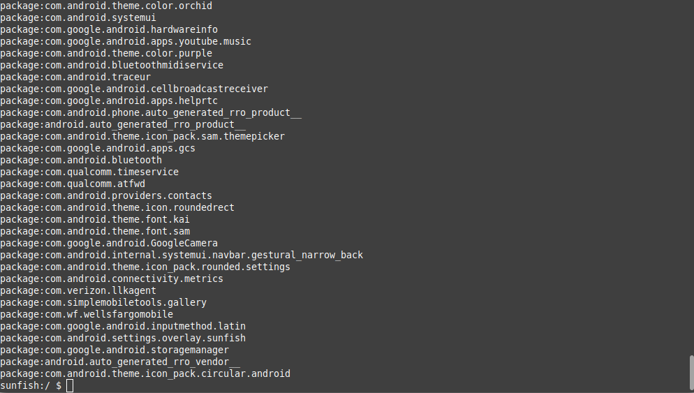
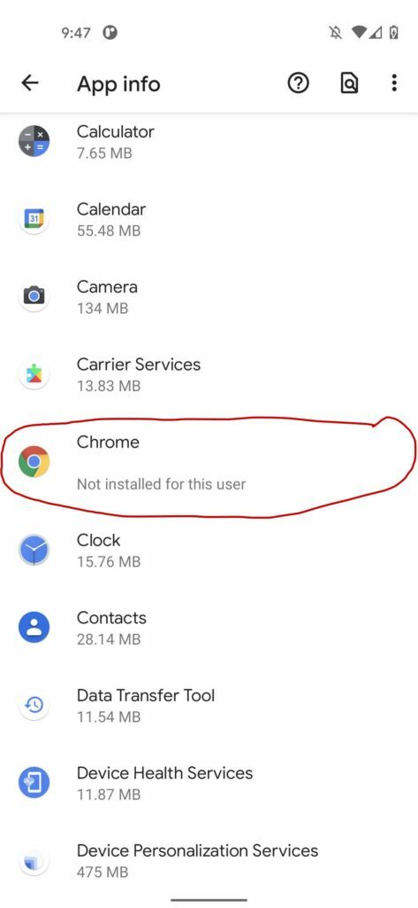
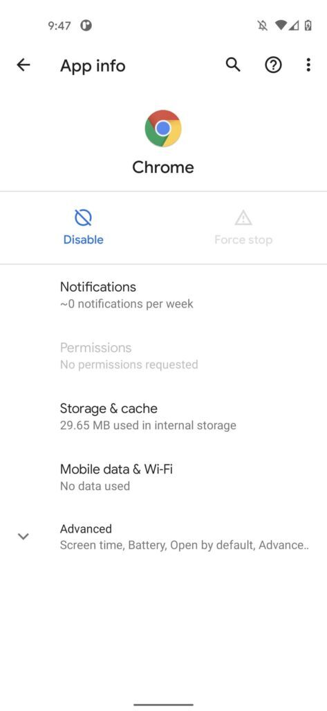

Distraction-Free Android
Being that I'm such a loyal Linux user, it may not surprise you that I'm also a loyal Android user. And yes, I did use iOS at one point, but I was not impressed with it. And I'm certainly not impressed with the prices iOS devices go for (keyword=iOS. I do want to try MacOS at some point).
Anyway.
One of the things I like about Android is how much you can customize it. The right combination of widgets and launchers can help you make it your very own. But Android is still a smartphone, and that equals convenience and lots of distractions. Especially distraction. After owning a smartphone for a year, and getting sucked into it in the process, I decided I needed to really take steps to take control of my phone. Deleting apps certainly help, but when the Play store and the browser are right there, it's too easy to succumb in a moment of weakness.
The first tool I tried was the Android version of FocusMe, and it was really nice, and it did do a good job protecting you from distraction apps. However, you could still get around it at times, and it didn't block notifications (which kind of defeats the purpose in my opinion). I also feel like it used a lot of battery power. Because Android is so easy to open, I learned about and decided to go down a different route: Using the developer tools to uninstall distracting apps.
Why Would I Want to Do This?
True, this may seem like an extreme step. But let's take a step back. Is it really?
There has been a lot of discussion regarding digital minimalism and social media over the past few years, with much of the discussion starting to address the harsh reality of mobile devices and apps: they are slot machines. Many of the big tech companies, and all the social media companies, build their business model around extracting attention. The more time you spend on an app, the more money they make. If you feel like you are literally addicted to your phone, it is not solely your fault. These devices are designed to be addictive.
While a lot of this is aimed at social media, I'm not solely talking about that one aspect. Even the interfaces of the devices themselves and apps you normally wouldn't think to be addictive can keep you coming back and starting at them. Even if you succeed in removing these apps, reinstalling them are only a click away.
In the past, I used to disable the Google Play Store and Chrome in the device settings, and while this certainly helped, it was still too easy to go back and re-enable everything. Eventually, I decided to go all the way and remove the Play Store and Chrome, and leaving only my most essential apps, essentially turning my phone into a dumb phone.
Will This Break It?
I have good news for you: it will not. Originally, I thought you would have to root the device to do this sort of thing, but this can easily be done through the developer tools. While I can't speak for every device, I tried this on three different devices, and in all cases everything else continued to work perfectly, and both the Play Store and Chrome could be restored without resetting the device.
That said though, please do this at your own risk. I'm not responsible if anything goes wrong.
Enabling Developer Mode
Enabling developer mode is easy and can be done in settings. First, go to "About Phone" (this can vary slightly depending on device), find the software information, and find an option labeled "Build Number".
Next, find the "System Settings", and find "Developer Options":

Finally, enable "USB debugging":

ADB
Now that this done, we can remove the apps. To do this, you need to install the Android Debug Bridge (ADB) on your computer. On Linux, this can usually be found in the repositories with a search. On Windows and MacOS, it comes as part of Android Studio, but I'm sure you can install it as a standalone package.
Once installed, go ahead and plug your phone in. On my Google Pixel phone, I had to go to "Connected devices" -> "USB Preferences", and set the data transfer settings for "File Transfer" in order for the debugging to work. On my Samsung Tablet and an old Motorola, I didn't have to do this.
Once you have your phone connected, type "adb devices". You should see a device listed, which will be the serial number I believe:

Next, type "adb shell". This will give you access to the internal Android daemon that allows you to execute commands on your device. As a starter, let's see what packages we have. Type:
# Only do the first if you haven't already
adb shell
# List all installed apps.
pm list packages
The output will vary by device, but it will be long:

As you can see, that's not too helpful- it will be hard to go through all that. Fortunately, the shell works like and gives you access to tools commonly found on Linux. Let's use "grep" to kind something. Since Chrome is gone on my device, let's use "keep" (I use Google Keep). Type this:
pm list packages | grep keep
And you should see this:
This is a very handy tool to figure out what the package names are. In the case of Chrome, the package name is "com.android.chrome", and in the case of Google Play, the package name is "com.android.vending". Let's go ahead and remove them. Type these commands:
pm uninstall -k --user 0 com.android.vending
pm uninstall -k --user 0 com.android.chrome
These commands keep the packages so you can reinstall them if you really need to later, but they delete them in such a way that you cannot re-enable them from the device. As proof, go into your device settings -> "Apps & notifications" -> "See all apps", and scroll down. As you can see, Chrome is still listed, but cannot be enabled. Neither can Google play:
- 
- 
Important!
Don't go crazy when removing stuff because you can mess up your device if you're not careful. Only remove stuff that you are sure isn't going to break the whole thing. One thing I have found- and don't hold me to this because it could vary by device- but if you can go into settings, disable the app, and everything works fine, then it is safe to perform these steps. I have disabled Chrome and Play on multiple devices several times without any huge issues.
Reinstalling the Apps
The good news about this is you can reinstall the application if you really need to. The following commands will re-enable both Chrome and Google Play. You can use them on any other application you want re-enabled (except for those you downloaded from Play. You probably have to reinstall those manually).
pm install-existing com.android.vending
pm install-existing com.android.chrome
Conclusion
Hopefully you found this helpful. It will definitely be an adjustment at first as you learn to work without these applications, but I think it is well worth it. Removing applications that suck your time- and the ability to even install them on a whim- eliminates a large part of the problem up front.
Thanks for reading!
</ul>
</ul>